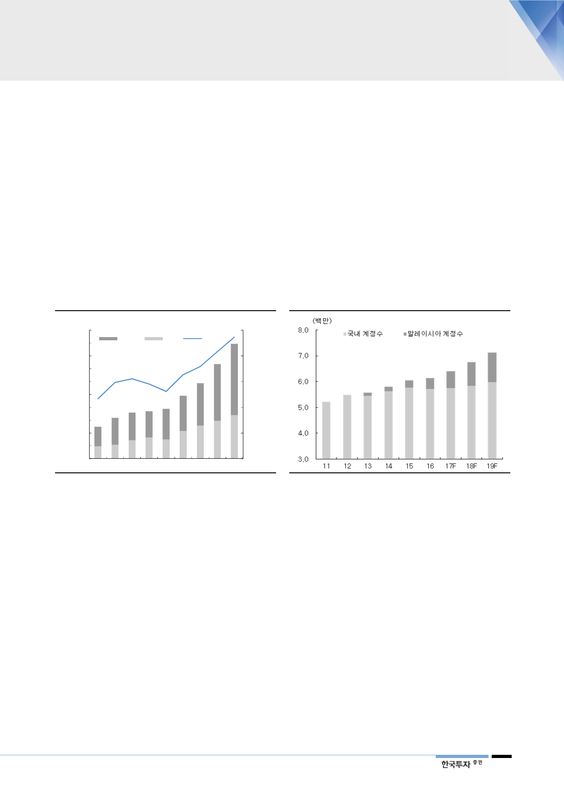

II. 해외 고성장: 말레이시아와 중국
내수 업체에서
글로벌 플레이어로
1. 말레이시아가 1등 공신
코웨이는 내수를 기반으로 성장, 2010년대부터 해외 사업이 두각을 나타냈으며
해외 사업 매출 비중은 금년 21%에 달할 전망이다. 말레이시아 렌탈과 중국향
청정기 수출이 주로, 최근 가장 눈부신 성장은 말레이시아 렌탈 사업이다. 동사는
2006년 말레이시아 시장에 진출, 2017년 64만 가입자로 글로벌 계정수의 10%
이상을 말레이시아에서 확보했다. 코웨이는 현재 가입자와 판매량 기준 모두 40%
이상의 점유율을 확보한 1위 업체로 말레이시아 사업은 2016, 2017년도를 기점
으로 가입자가 급증하고 있다. 금년에도 약 26만 계정 순증이 가능할 전망이며
2019년 91만. 2020년에는 114만 가입자를 확보할 전망이다. 또한 말레이시아
ARPU는 국내보다 30% 이상 높아 ARPU 상승에도 기여할 것이다.
[그림 3] 해외 관련 매출 및 기여도
(십억원)
1,000
900
자회사
수출
(%)
25.0
비중(우)
800
20.0
700
600
15.0
500
400
10.0
300
200
5.0
100
0
-
11 12 13 14 15 16 17 18F 19F
자료: 코웨이, 한국투자증권
[그림 4] 국내+말레이시아 계정수 전망
자료: 코웨이, 한국투자증권
말레이시아 정수기 시장
고성장 전망: 1) 소득 향상,
2) 수질 오염, 3) 수입 업체
들 공격적인 시장 진입
말레이시아 정수기 시장은 판매량 기준 2017년 약 70만대 수준으로 추정된다.
2015~2016년 40~50만대에 불과했으나 최근 수입 시장 고성장과 함께 시장이
크게 성장하고 있다. 보급률은 여전히 20%에 불과하다. 2020년 말레이시아 정
수기 보급률이 35%까지 상승한다고 가정하면 향후 말레이시아 시장은 2020년
판매량 약 100만대 이상 시장으로 성장할 것이다.
말레이시아 소득 수준 상승, 심각한 수질 오염, 수입 업체들의 시장 진출에 힘입
어 시장이 고성장할 것으로 예상한다. 코웨이의 국내 정수기 계정수가 급격하게
증가한 것은 국내 인당 GDP가 1만 달러를 돌파했을 때이며 말레이시아 소득 수
준은 2011년부터 1만 달러를 돌파, 향후 중산층의 정수기 수요가 증가할 것이다.
또한 말레이시아는 수질 오염으로 인해 정수기 수요가 매우 높다. 정수기 수입 국
가 중 8위이다. 말레이시아가 주요 시장으로 부상하면서 수입 업체들이 급증, 정
수기 시장이 더욱 빠르게 형성될 것이다.
3